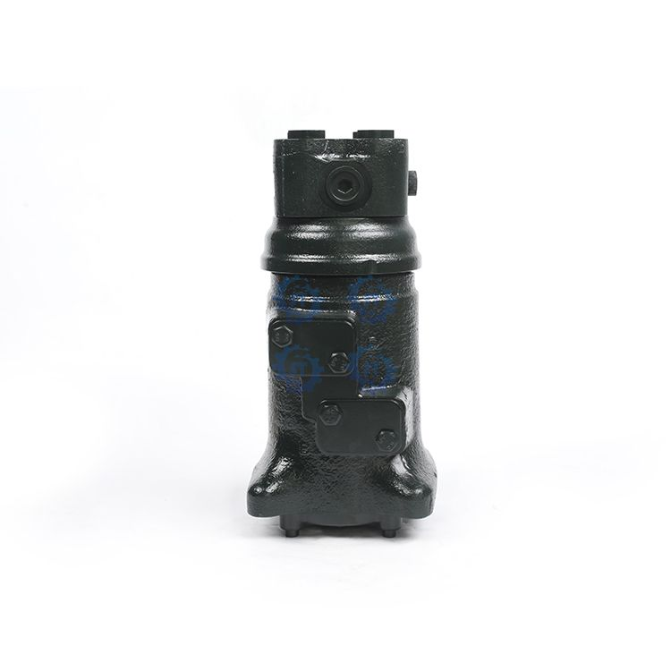

Hydraulic center swivel joints for all major excavator brands. 18 months warranty.

Hydraulic center joint (swivel joint) for excavator hydraulic system, connecting upper and lower hydraulic circuits.
| Parameter | Value |
|---|---|
| Channels | To be confirmed |
| Working pressure | To be confirmed |